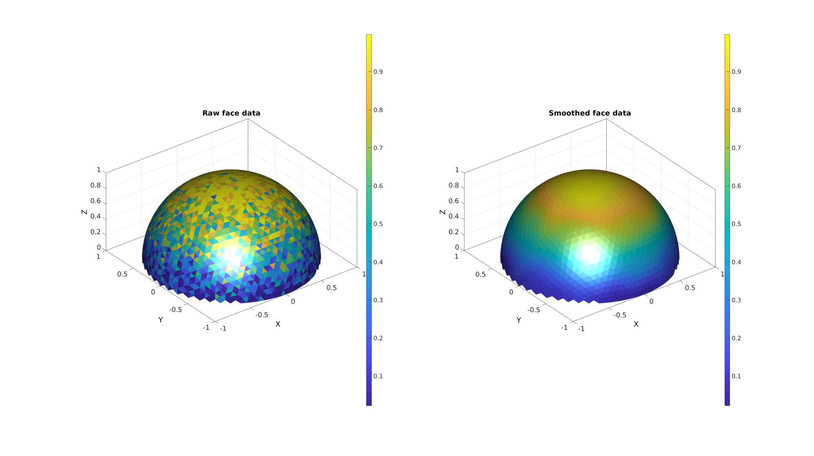
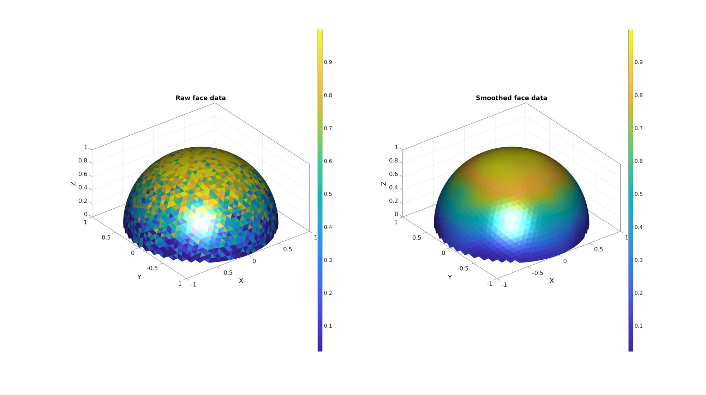
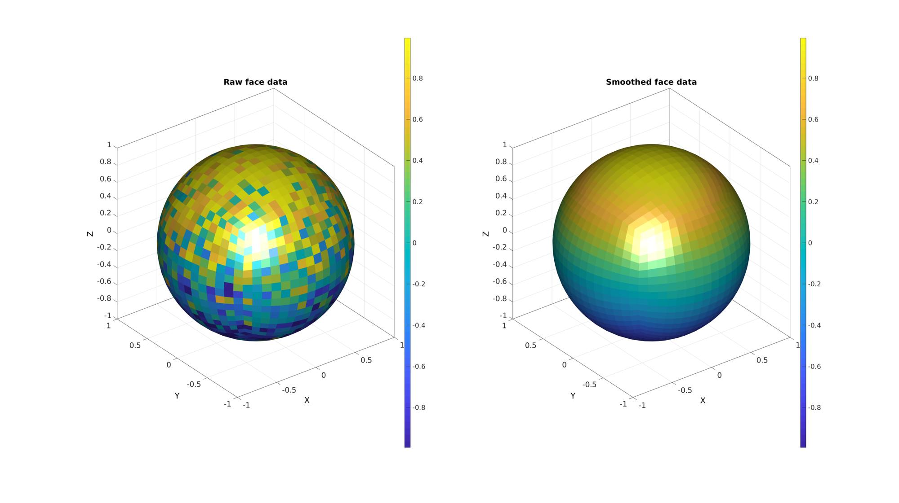
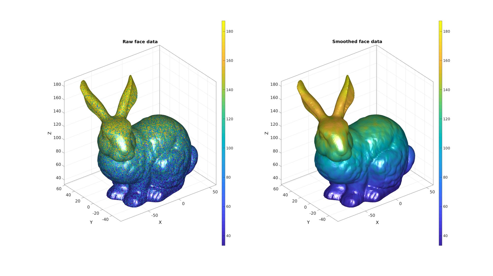
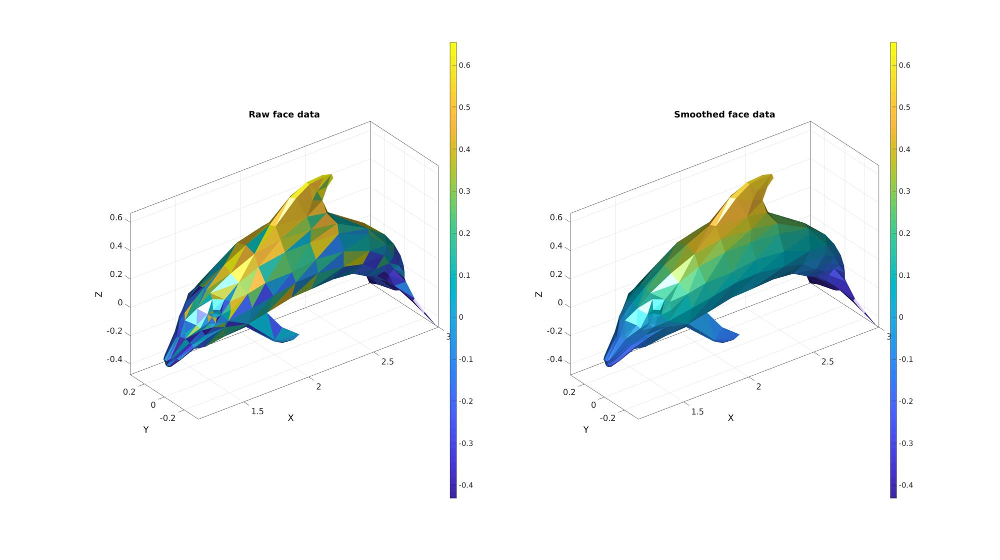
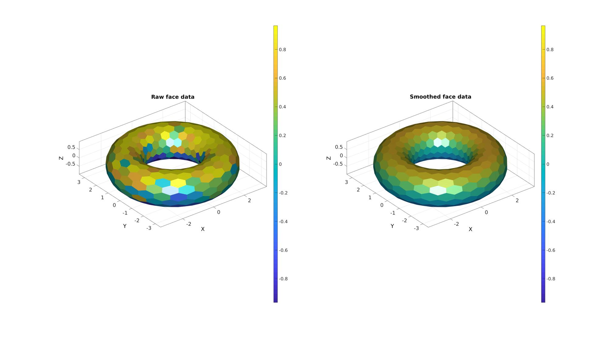

patchSmoothFaceMeasure
Below is a demonstration of the features of the patchSmoothFaceMeasure function
Contents
Syntax
[C_smooth]=patchSmoothFaceMeasure(F,V,C,smoothPar);
Description
Examples
clear; close all; clc;
Plot settings
markerSize=50;
Demonstrating
smoothPar.lambda=0.5; %Lambda for smoothing smoothPar.n=25; %Number of smooth iterations for testCase=1:6
[F,V]=graphicsModels(testCase);
switch testCase
case 1 %Cut patch data with unused points
[F,V]=geoSphere(4,1);
Z=V(:,3);
F=F(mean(Z(F),2)>0,:);
case 2 %Cut patch data
[F,V]=geoSphere(4,1);
Z=V(:,3);
F=F(mean(Z(F),2)>0,:);
[F,V]=patchCleanUnused(F,V);
case 3 %Quadrilateral patch data
[F,V]=quadSphere(4,1);
case 4 %A larger mesh
[F,V]=graphicsModels(1);
case 5 %A tangled mesh
[F,V]=graphicsModels(8);
case 6
r=1; %Sphere radius
rc=2.5; %Central radius
nr=16;
nc=25;
patchType='honey';
[F,V]=patchTorus(r,nr,rc,nc,patchType);
end
Z=V(:,3);
C_clean=mean(Z(F),2);
C=C_clean+(max(C_clean)-min(C_clean))/5*randn(size(F,1),1);
[C_smooth]=patchSmoothFaceMeasure(F,V,C,smoothPar);
cFigure;
subplot(1,2,1); hold on;
title('Raw face data');
gpatch(F,V,C,'none');
colorbar(gca); caxis([min(C_clean) max(C_clean)]);
axisGeom;
camlight headlight;
subplot(1,2,2); hold on;
title('Smoothed face data');
gpatch(F,V,C_smooth,'none');
colorbar(gca); caxis([min(C_clean) max(C_clean)]);
axisGeom;
camlight headlight;
drawnow;
      end
GIBBON footer text
License: https://github.com/gibbonCode/GIBBON/blob/master/LICENSE
GIBBON: The Geometry and Image-based Bioengineering add-On. A toolbox for image segmentation, image-based modeling, meshing, and finite element analysis.
Copyright (C) 2019 Kevin Mattheus Moerman
This program is free software: you can redistribute it and/or modify it under the terms of the GNU General Public License as published by the Free Software Foundation, either version 3 of the License, or (at your option) any later version.
This program is distributed in the hope that it will be useful, but WITHOUT ANY WARRANTY; without even the implied warranty of MERCHANTABILITY or FITNESS FOR A PARTICULAR PURPOSE. See the GNU General Public License for more details.
You should have received a copy of the GNU General Public License along with this program. If not, see http://www.gnu.org/licenses/.